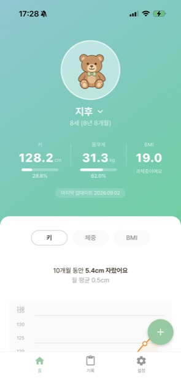
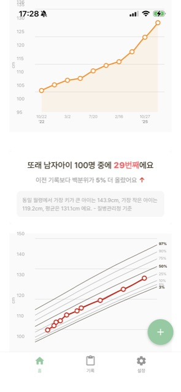
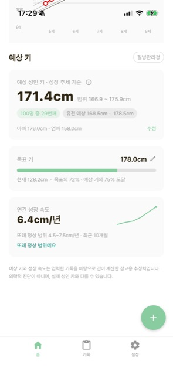

우리 아이, 또래 중 몇 %일까?
크면 몇 cm 될까?
키·몸무게를 기록하면 질병관리청·WHO·CDC 성장도표로 또래 백분위, BMI, 예상 성인 키를 계산해 줍니다.



이런 게 궁금할 때
또래 백분위
키·몸무게·BMI가 같은 개월 수 또래 중 어디쯤인지 곡선으로 보여줘요.
예상 키
성장 추세와 부모님 키로 예상 성인 키를 오차 범위와 함께 알려줘요.
자녀 여러 명
아이마다 프로필·기록·차트를 따로 관리해요.
내 기기에만 저장
계정이 없어요. 아이 정보는 서버로 전송되지 않아요.
믿을 수 있는 성장 기준
나라별 공식 성장도표를 골라 쓸 수 있어요 — 질병관리청(한국), WHO, CDC(미국), 후생노동성(일본), 국가위생건강위원회(중국), UK90(영국). 나이는 성장도표와 동일하게 만 개월 수로 계산합니다.
엄마가 만들었어요
아이 검진 때마다 "또래보다 큰 걸까 작은 걸까" 가 궁금했어요. 성장도표를 직접 찾아보기는 번거롭고, 앱들은 기준이 제각각이더라고요.
그래서 공식 성장도표(LMS) 그대로 계산하고, 병원 결과와 맞는지 하나하나 확인해서 만들었습니다. 같은 고민을 하는 부모님께 도움이 되면 좋겠어요.
자주 묻는 질문
정말 무료인가요?
네. 광고로 운영되며, 아이 정보는 광고에 사용되지 않아요.
예상 키는 정확한가요?
성장 추세 기반 참고용 추정치예요. 정확한 평가는 소아청소년과 전문의와 상담하세요.
데이터는 어디에 저장되나요?
이용자 기기에만 저장됩니다. 자세한 내용은 개인정보처리방침을 참고하세요.
더 궁금한 점은 고객 지원 페이지를 확인하세요.
Where does your child stand
among peers? How tall will they be?
Log height and weight, and Grovii uses WHO, CDC and other official growth charts to show peer percentiles, BMI and a predicted adult height.
What Grovii answers
Peer percentile
See where height, weight and BMI fall among children of the same age in months.
Predicted height
An estimated adult height from the growth trend and parents' heights, with a margin of error.
Multiple children
Each child gets its own profile, records and charts.
Stored on your device
No account. Your child's data is never sent to our servers.
Trusted growth standards
Choose the official growth chart you trust — WHO, CDC (US), KDCA (Korea), MHLW (Japan), NHC (China), UK90 (UK). Age is counted in completed months, exactly like the charts themselves.
Made by a parent
At every check-up I wondered whether my child was big or small for their age. Looking up growth charts by hand is tedious, and the apps I tried all used different standards.
So I built one that computes straight from the official LMS growth data and checked it against real clinic results. I hope it helps other parents with the same question.
FAQ
Is it really free?
Yes. It's ad-supported, and your child's data is never used for ads.
Is the predicted height accurate?
It's a reference estimate based on the growth trend. For an accurate assessment, see a pediatrician.
Where is my data stored?
On your device only. See the Privacy Policy for details.
For more, visit the Support page.